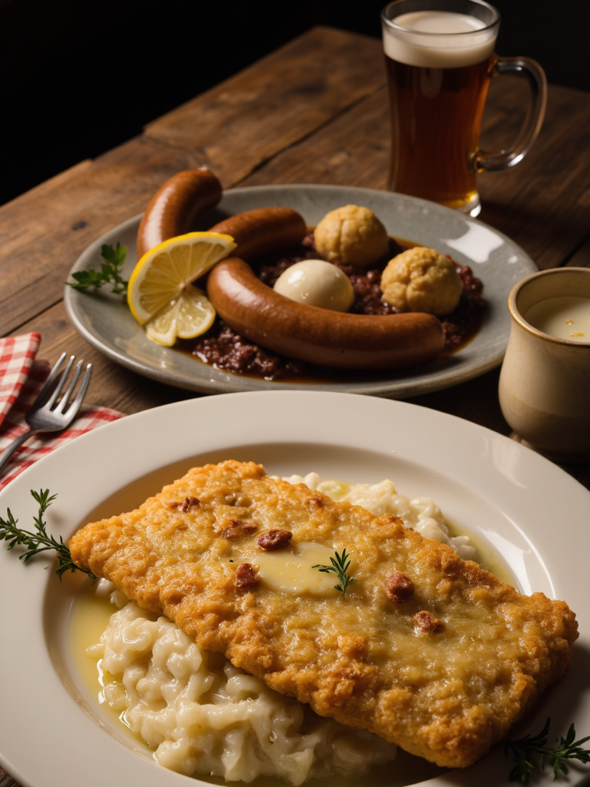
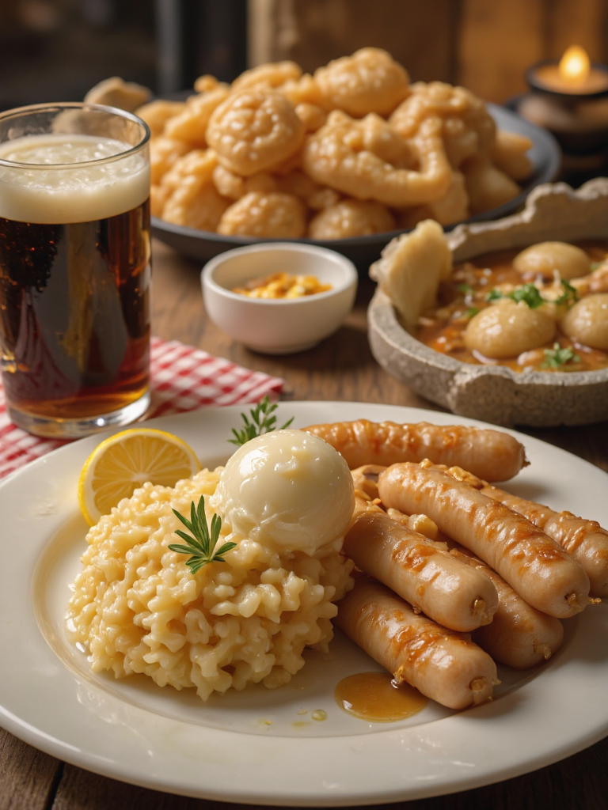
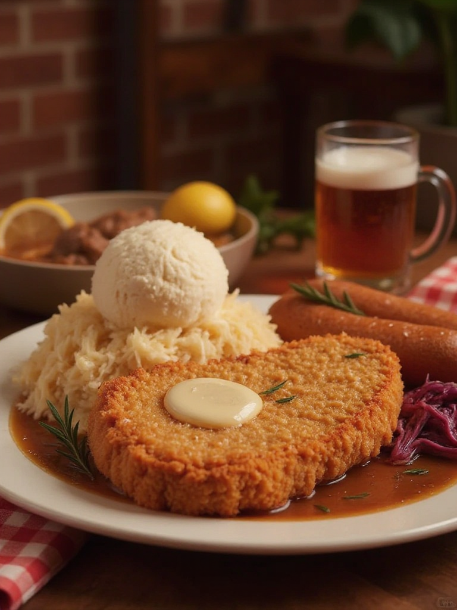

A História do Nissela Schiller
No século XIX, o jovem cozinheiro Heinrich Schiller encontrou uma cabana abandonada na floresta perto de sua vila. Dentro, descobriu um livro de receitas antigas pertencente a Nissela, uma misteriosa feiticeira conhecida por suas poções culinárias. Inspirado, Heinrich transformou a cabana em um restaurante, batizado de Nissela Schiller. Com pratos tradicionais e um toque de magia, o local rapidamente se tornou um ponto de encontro querido na região, mantendo viva a tradição e o espírito acolhedor de Heinrich e Nissela.
Schnitzel à Milanesa com Purê de Batata
Um clássico da culinária alemã, o schnitzel é uma carne empanada e frita até ficar dourada e crocante. Servido com purê de batata cremoso e um toque de limão, é um prato reconfortante e saboroso.
Bratwurst Grelhada com Chucrute e Mostarda Artesanal
As salsichas bratwurst, grelhadas e suculentas, são acompanhadas de chucrute caseiro e uma mostarda artesanal. Um prato tradicional que combina sabores intensos e marcantes.
Sauerbraten com Knödel e Repolho Roxo
Carne marinada em vinagre e especiarias, cozida lentamente até ficar macia. Servida com knödel (bolinhos de batata) e repolho roxo caramelizado, é uma experiência rica em sabores tradicionais.
